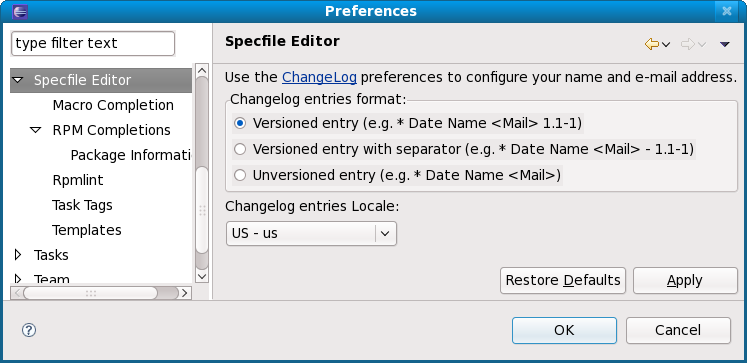
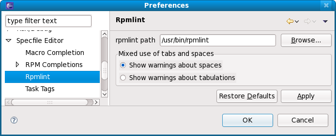
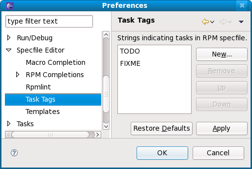

| Configuring Specfile Editor Settings | ||
|---|---|---|
|
|
|
|
| Import src.rpm | Updating This Document | |
To configure Specfile Editor settings, navigate to Window / Preferences. Then, from the left pane of the Preferences menu, select Specfile Editor .

Upon selecting the Specfile Editor menu, you can configure the format and locale of Changelog entries. To edit the actual content of your Changelogs, click the ChangeLog hyperlink in the menu, or use Ctrl+' Alt'+' C' (outside of the Preferences menu).
Macro definitions enable the Specfile Editor to properly highlight and autocompile .spec files. The Macro Completion sub-menu allows you to add/remove macro definitions and configure how the Specfile Editor should present macro values during mouse hovers.

The Macro Definitions section shows what macros the Specfile Editor is using. You can add, delete, and reorder macros using the buttons to the left of this section.
The Mouse hover content section enables you to specify what kind of information about a macro value whenever you hover your mouse over it. You can choose whether to display the contents or description of a macro value. The following screenshots illustrate the difference between both options:


The
RPM Completions
section allows you to configure generic package list settings. This section allows you to use distribution-specific references which supplement auto-completion in editing
.spec files. These distribution-specific references include a list of installed RPM packages as well as online repositories.

RPM Completions configures the following settings:
rpm or yum to build the package listThe Specfile Editor can use package management tools to build the package list. Currently, the Specfile Editor only supports yum and urpmi. If neither package management tools are present in the system, the Specfile Editor will use rpm to build the package list.
This sub-section of RPM Completions allows you to configure what package details (i.e. RPM tags) to display during mouse hovers over appropriate values. Package Information also lets you set the number of packages to show details for.

Package Information
contains a checklist of RPM tags (e.g.
Name
,
Version
,
Release
). The Specfile Editor displays these tags during mouse hovers on package information in the
.spec file. You can also set a threshold for the number of proposals that enables the Specfile Editor to display this information. By default, the threshold is 10.
The
Rpmlint
section allows you to configure where rpmlint is installed, which is useful if it is installed somewhere other than the default
/usr/bin/rpmlint. This section also allows you to set whether warnings should be used for tabs or spaces, which is useful if you use both in the
.spec file.

The
Task Tags
section allows the Specfile Editor to identify specific strings as
task tags. The Specfile Editor will only search for these strings in comments. By default, the Specfile Editor identifies the strings TODO and
FIXME as task tags.

Whenever the Specfile Editor finds a task tag in the
.spec file, it adds the tag to the
Tasks
view and plots an appropriate marker in the editor. Clicking the tag in the
Tasks
view will automatically place the insertion point on the corresponding string in the
.spec file.

The
Templates
section allows you to share and manage different
.spec file directive/section templates for all contexts.

The Import and Export functions allow you to share templates with other developers who may also be working on the same package. The New and Edit buttons open a menu for adding or revising templates; they both contain the same options.

|
|

|
|
| Import src.rpm | Updating This Document |